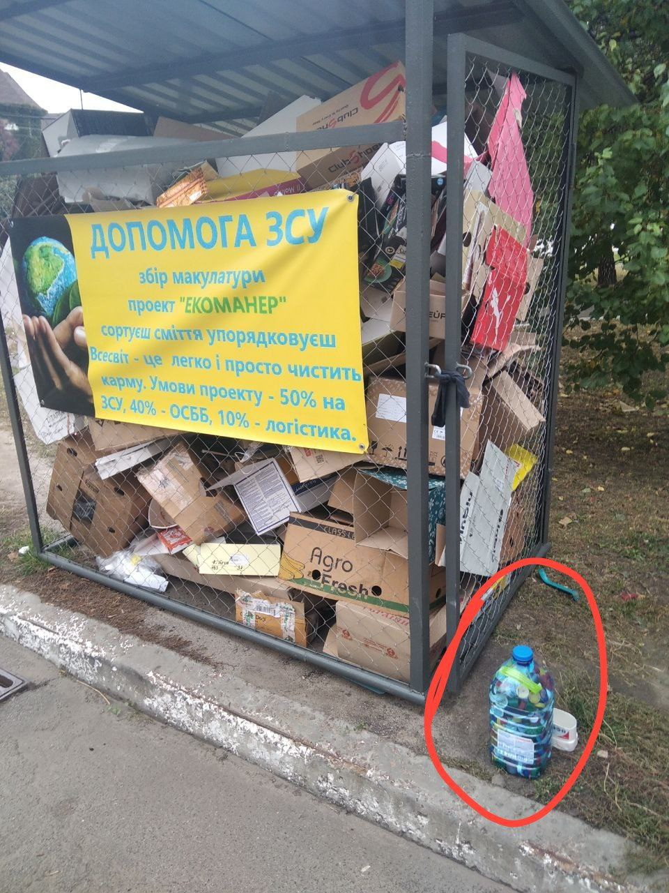

Сетка по майнингу и спонсорство сбора мусора
Пример: Сетка по майнингу и спонсорство мусорных баков в Киеве
Стоимость одного мусорного бака составляет 400 токенов Экоманера, что эквивалентно 400 долларам США.
За сутки один ящик приносит его владельцу 0,1 токена.
NFT-модули для игры
Эти NFT-модули помогают развивать ваш виртуальный город, улучшая переработку отходов, управление энергией и другие аспекты экологии.
Модуль Сортировочная станция
Для эффективной сортировки мусора и повышения эколого-экономической устойчивости города.
Завод по переработке
Перерабатывает вторсырье для производства вещей длительного использования и уменьшения количества отходов.
Биореактор
Позволяет перерабатывать органические отходы в биоэнергию и гумус, улучшая экологический рейтинг города.
Товары с символикой Экоманер
Поддержите проект, приобретая уникальные вещи с символикой Экоманер!
Кружка с логотипом Экоманер
Футболка Экоманер
Эко-сумка для покупок
Ручка с логотипом Экоманер
Покупка токенов Экоманер
Токены Экоманера необходимы для участия в проекте и покупки некоторых игровых элементов. 1 токен стоит 1 доллар США. Покупка токенов будет возможна через внутреннюю биржу проекта, которая находится в разработке.